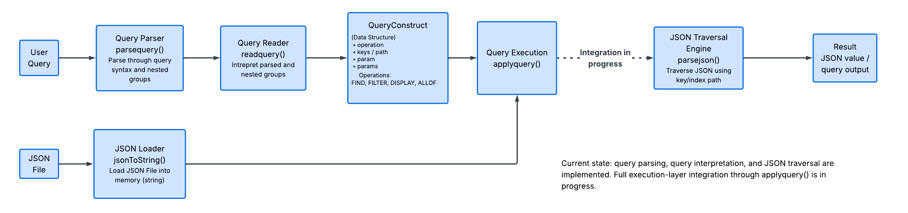
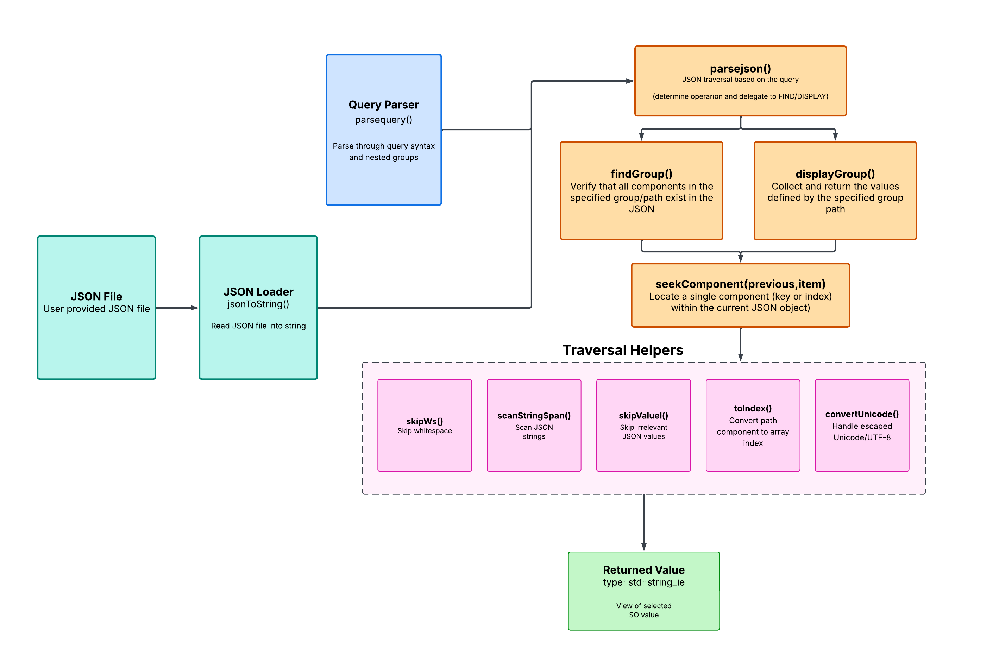

System Architecture
The JSON Query Engine is organized into separate layers for command-line interaction, query parsing, command execution, and direct JSON traversal. The query parser describes what the user wants, while the JSON parser locates and processes that data in the loaded document.
High-Level Architecture
The program follows a pipeline in which the JSON document and the user's query are prepared separately and then passed together to the execution layer.

The query parser converts textual query syntax into a recursive data structure. The JSON parser receives that parsed structure together with the JSON document and executes the selected operation.
Major Components
The implementation is primarily divided among the application controller, query parser, and JSON processing subsystem.
main.cpp
Provides the command-line interface, accepts a JSON filename, loads the document, accepts repeated queries, and coordinates parsing and execution.
Application ControllerQuery Parser
queryparser.h and
queryparser.cpp define the query
representation and convert raw command text into a
recursive ParsedQuery.
JSON Parser
jsonparser.h and
jsonparser.cpp load JSON data, dispatch
commands, traverse objects and arrays, and format
returned values.
Application Controller
main.cpp owns the top-level program loop. It does
not contain the query parsing or JSON traversal algorithms itself.
Instead, it connects those subsystems together.
Responsibilities
- Display the command-line interface.
- Read the user's selected JSON filename.
-
Construct the path
jsonFiles/<filename>.json. -
Load the document using
json_parser::mapFile(). - Read complete query lines from standard input.
-
Send query text to
queryparser::parsequery(). -
Retrieve the resulting
ParsedQuery. -
Send both the JSON document and parsed query to
json_parser::parsejson(). - Display returned values or error messages.
- Allow additional queries to run against the same mapped JSON file until the user exits.
main.cpp acts as the coordinator. Parsing and JSON
traversal remain delegated to their own modules.
JSON Document Loading
The main application loads JSON through:
std::string_view mapFile(const std::string& path);
mapFile() opens the selected file and maps it into
the process address space using a read-only private
mmap mapping. The JSON processing code then accesses
the mapped bytes through a std::string_view.
Input
A path such as:
jsonFiles/big.jsonRepresentation
The mapped file is exposed to the rest of the engine as:
std::string_viewPurpose
Query execution can scan the original JSON text without first constructing a complete in-memory JSON object tree.
The JSON subsystem also provides:
std::string jsonToString(std::ifstream& json);This provides an owning string representation when one is needed, including in parts of the testing code.
Query Parser
The query parser is responsible for converting a raw string such as:
DISPLAY {"users" {1 {"profile" {"location" {"city"}}}}}into structured data that the JSON execution layer can interpret.
The public parsing interface is:
void queryparser::parsequery(const std::string& query);The parser recognizes the command, quoted tokens, nested brace groups, array index tokens, and FILTER arguments.
Why Preserve the Nested Structure?
A query is not stored as a flat path because the language supports both nested traversal and multiple sibling targets.
DISPLAY {"users" {1 {"name" "email" "score"}}}
In this example, users and 1 describe
descent through the document, while name,
email, and score are sibling requests
inside the same object.
Core Query Data Structure
Recursive query syntax is represented by
JSONType.
struct JSONType {
std::variant<
std::string,
std::vector<JSONType>
> structure;
};
Each JSONType therefore contains one of two things:
String Component
Represents one textual query component, such as:
users
1
profile
cityNested Group
Stores another
std::vector<JSONType>, allowing query
nesting to continue recursively.
ParsedQuery
The parser stores the complete parsed command in
ParsedQuery.
struct ParsedQuery {
std::vector<JSONType> parts;
Query command = Query::FIND;
bool isRegexFilter = false;
};parts
Stores the recursive query components produced from the original input.
command
Identifies which operation the execution layer should perform.
isRegexFilter
Records whether a FILTER query uses regex matching rather than numeric bounds.
Other modules access the most recently parsed query through:
const ParsedQuery& queryparser::getparsedquery();Parser-to-Executor Boundary
A major architectural boundary exists between
queryparser and json_parser.

The query parser accepts the raw command text and creates a
ParsedQuery containing the command type, recursive
query structure, and FILTER metadata.
The JSON subsystem therefore does not need to tokenize the original command string. It receives a structured query that has already been interpreted by the query parser.
JSON Execution Layer
Parsed commands are executed through:
std::string json_parser::parsejson(
std::string_view json,
const ParsedQuery& query
);This function forms the main entry point from parsed query data into JSON processing.
FIND
Checks whether the requested recursive structure exists and produces a Boolean result.
DISPLAY
Locates requested values and collects them for output.
FILTER
Locates a target array, evaluates a selected field, and collects complete matching elements.
After command-specific processing completes, collected values are
formatted into the output returned to main.cpp.
JSON Processing Subsystem
The JSON parser works directly with character positions inside the mapped JSON document rather than building a separate tree of C++ objects.
Internally, the subsystem contains reusable helpers for several responsibilities.
Whitespace & Strings
Helpers move over JSON whitespace and recognize quoted string boundaries, including escaped characters.
Object Lookup
Object keys are scanned and compared with requested query components.
Array Navigation
Numeric query components are interpreted as array positions.
Value Boundaries
Complete JSON values can be located or skipped without constructing an object representation.
Unicode Handling
Unicode escape sequences can be converted to UTF-8 for comparison and returned output.
Command Operations
FIND, DISPLAY, and FILTER build on these lower-level traversal helpers.
Result Representation
Query execution ultimately returns a
std::string to the application layer.
FIND
Produces:
trueor
falseSingle DISPLAY Result
A single value is returned directly.
"Marco Ruiz"Multiple Results
Multiple collected values are formatted as a JSON-style array.
["Austin", "TX", "78701"]FILTER
Matching array elements are returned as their complete JSON representations.
Public JSON Parser Interfaces
include/jsonparser.h exposes the primary functions
used by the rest of the project.
| Interface | Role |
|---|---|
mapFile(path)
|
Maps a JSON file and returns a
std::string_view over its bytes.
|
jsonToString(stream)
|
Copies an input stream into an owning
std::string.
|
parsejson(json, path)
|
Performs path-based lookup using a
std::vector<std::string>.
|
parsejson(json, ParsedQuery)
|
Executes a parsed FIND, DISPLAY, or FILTER command. |
isFileOpen(stream)
|
Reports whether an input file stream is open. |
Internal System Design
This diagram focuses on the relationships among the application's internal modules: the command-line layer, query data structures, execution entry points, and JSON processing subsystem.

Important Module Boundaries
| Boundary | Data Passed | Purpose |
|---|---|---|
main.cpp → mapFile()
|
JSON file path | Load the selected document. |
main.cpp → parsequery()
|
Raw query string | Convert user syntax into structured query data. |
queryparser → json_parser
|
ParsedQuery
|
Transfer command type, recursive query structure, and FILTER metadata. |
main.cpp → parsejson()
|
JSON view + parsed query | Execute the requested operation. |
parsejson() → main.cpp
|
Result string | Return the final query result for display. |
Repository Code Map
New contributors can use this table to find the implementation associated with each part of the architecture.
| File | Responsibility |
|---|---|
main.cpp
|
Command-line interface and top-level application control flow. |
include/queryparser.h
|
Defines JSONType,
ParsedQuery, command metadata, and the
public query-parser interface.
|
src/queryparser.cpp
|
Implements command recognition, recursive query parsing, quoted-token handling, validation, and FILTER metadata detection. |
include/jsonparser.h
|
Declares JSON loading, path lookup, and parsed-query execution interfaces. |
src/jsonparser.cpp
|
Implements memory-mapped file access, JSON scanning, object and array traversal, FIND, DISPLAY, FILTER, result collection, and Unicode handling. |
tests/queryparsertest.cpp
|
Tests query parsing and recursive query representation. |
tests/jsonparsertest.cpp
|
Tests JSON lookup, traversal, values, edge cases, and supported query operations. |
benchmark.cpp
|
Contains standalone performance benchmark code. |
benchmarks.txt
|
Stores benchmark output from project performance measurements. |
Architectural Design Decisions
Separate Query Parsing
The JSON executor receives a structured query rather than interpreting the original command string itself.
Recursive Query Representation
JSONType preserves nested groups and sibling
targets instead of flattening every query into one path.
Direct Text Traversal
JSON operations scan the original document text rather than constructing a complete object tree before querying.
Memory-Mapped Input
The command-line application accesses the selected JSON
file through a memory-mapped std::string_view.
Shared Traversal Infrastructure
FIND, DISPLAY, and FILTER reuse common JSON scanning functionality rather than implementing unrelated parsers.
Reusable Loaded Document
A JSON file is loaded once and can be queried repeatedly during the same command-line session.
Continue Exploring
The architecture page explains which pieces exist and how they communicate. The Algorithms page explains how the major operations work internally.
Algorithms
Follow query parsing, component lookup, FIND, DISPLAY, FILTER, value skipping, and Unicode handling step by step.
View algorithms →Testing
Review parser tests, JSON fixtures, traversal tests, edge cases, and command validation.
View testing →Performance
Review benchmark results and the performance impact of direct JSON traversal and memory-mapped input.
View performance →